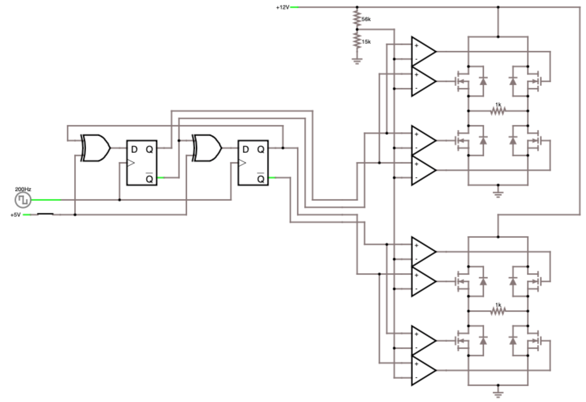

Here's a simple circuit to drive the coils in a stepper motor. Essentially, the circuit uses two H-bridges (one for each coil), buffered by op-amps and controlled by D-type flip-flops to get the proper timing pattern. To get variable speeds for the stepper, simply adjust the clock rate of the flip-flops. Also, note that the coils of the stepper would replace the 1k resistors in an actual implementation of this circuit.
And here's a video of the circuit in action (green indictes voltage):